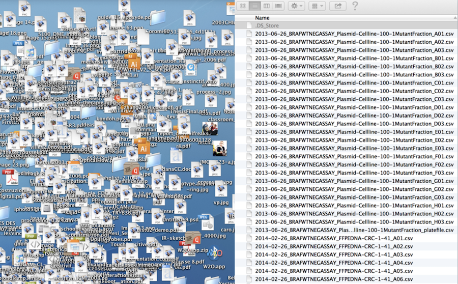
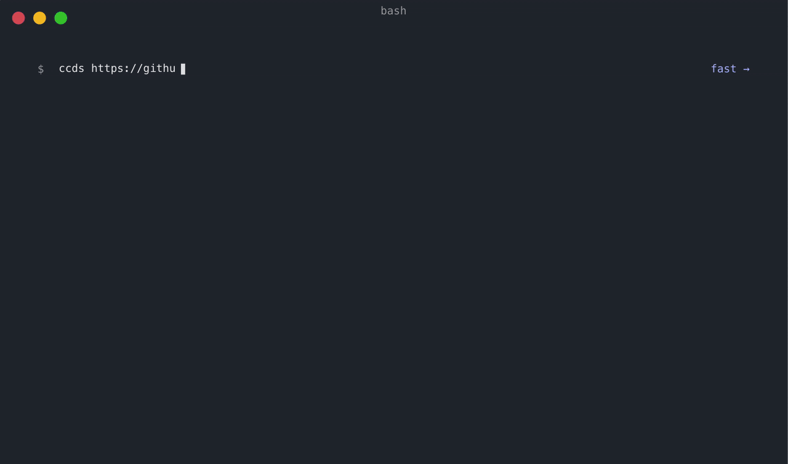

Project Structure
If you get hit by a bus today, will your colleagues be able to run your project tomorrow?
Software projects can be messy. Imagine joining a lab and receiving a project folder left by a previous postdoc. It might look something like this:

OK, probably not as extreme. Still, newcomers to data science often put everything into a single folder: data, scripts, figures, and tables. That can work if you only need to run an analysis once and no one else will ever need to repeat it, including yourself. That is rarely true in research, whether in academia or industry. In this lesson, we will look at practical ways to help colleagues—and your future self—understand and run a project. Let’s get organized.
Learning objectives
By the end of this lesson, you should be able to:
- recognize common problems in an unstructured project;
- organize files into meaningful directories;
- apply consistent, portable naming conventions; and
- create a README that enables someone else to run the project.
Lost Book Project
We will compare two versions of the same project—a messy version and a structured version—to see what works and what does not in the short and long term.
Messy project
.
├── analysis.sh
├── book1.txt
├── book102.txt
├── book2.txt
├── book3.txt
├── book5.txt
├── book55.txt
├── book79.txt
├── plot.sh
└── summary.shFirst, try to make sense of what the project is about and how to use it.
Open the messy project on GitHub
You can inspect the files directly on GitHub, or clone the repository if you want to run the scripts locally:
git clone https://github.com/igorsdub/gecs-messy-project.gitOpen the cloned directory with VS Code (Cmd+O). Before reading the explanation below, inspect the files and try to answer these questions:
- What is this project trying to do?
- Which files are inputs, scripts, and outputs?
- In what order should the scripts be run?
- What would make this project difficult for a colleague to continue?
Structured project
.
├── books <-- Text files of books used for analysis
│ ├── dracula.txt
│ ├── frankenstein.txt
│ ├── jane_eyre.txt
│ ├── moby_dick.txt
│ ├── README.md <-- README for the book files
│ ├── sense_and_sensibility.txt
│ ├── sherlock_holmes.txt
│ └── time_machine.txt
├── counts <-- Word count .tsv data
├── figures <-- Bar plots of word counts
├── README.md <-- README for the project
└── scripts <-- Scripts directory
├── count_words.sh <-- Counts occurrences of a word in books
├── get_summary.sh <-- Gets a book summary
└── plot_counts.sh <-- Plots count histogram in terminal windowThis is the same project, but organized.
Open the structured project on GitHub
Compare this repository with the messy version. Look for improvements in directory names, file names, documentation, and the separation of inputs, scripts, and generated outputs. If you cloned the messy project, clone this repository as well and open both directories in VS Code.
Tips
Directory structure
Here is a minimal directory structure adapted from bvreede on GitHub. More elaborate structures exist, but this is a useful starting point for many projects.
The directory structure distinguishes three kinds of folders:
Read-only (RO): not edited by either code or researcher. For example,
raw_datashould preserve the original data exactly as received.Human-writeable (HW): edited by the researcher only, such as scripts and project documentation.
Project-generated (PG): folders generated when running the code. These folders can be deleted or emptied and should be completely reconstituted when the project is run again.
.
├── README.md <- Description and how to run the project (HW)
├── requirements.txt <- Python package requirements (HW)
├── environment.yml <- Optional environment specification (HW)
├── processed_data <- Processed data ready for analysis (PG)
├── raw_data <- The original, immutable data dump (RO)
├── scripts <- Scripts for this project (HW)
└── results <- Project results: tables, figures, etc. (PG) Naming files and directories
Jenny Bryan from The Carpentries has shared online slides showing how to name—and how not to name—files and directories. The presentation can be summarized as follows.
KISS (Keep It Simple Stupid): use simple and consistent file names
Machine readable
Human readable
Orders well in a directory
Avoid special characters and spaces where possible, especially if files will be used across different operating systems or tools.
Use YYYY-MM-DD date format
Use
-to delimit words and_to delimit sections- i.e.
2019-01-19_my-data.csv
- i.e.
Left-pad numbers
i.e.
01_my-data.csvvs1_my-data.csvIf you don’t, file orders get messed up when you get to double-digits
You can use a variation of the above as long as you are consistent within a project.
README
README, or README.md since Markdown is widely used for project documentation, is one of the most important files in your project. It enables new users—and your future self—to understand and run the project without a considerable struggle.
A useful README should explain:
- the purpose of the project;
- how to install or activate the required environment;
- how to run the analysis;
- what inputs the project expects;
- where it writes tables, figures, and other outputs; and
- who created or maintains the project.
Make a README does a great job in conveying this message in a single webpage. Check it out!
Project template
Instead of creating project directory with all its supplementary files, software developers came up with a boilerplate structure that can be created in minutes. Cookie Cutter Data Science project is one of those. Although, the default template is aimed towards machine learning / data science researchers, you can find a simpler one shared by other researchers online. Another option, to create your own template that suits your needs.

Also, check out their Opinions page for project management tips. For reproducibility, record the software environment in a file such as requirements.txt, environment.yml, or a lockfile such as uv.lock or poetry.lock.
Project organization checklist
Before sharing a project, check that:
- the README explains the purpose, setup, inputs, commands, and outputs;
- raw data is clearly separated from processed data and is not overwritten;
- scripts are grouped in one place and can be run in a clear order;
- generated results can be deleted and recreated; and
- file and directory names are simple, descriptive, and consistent.